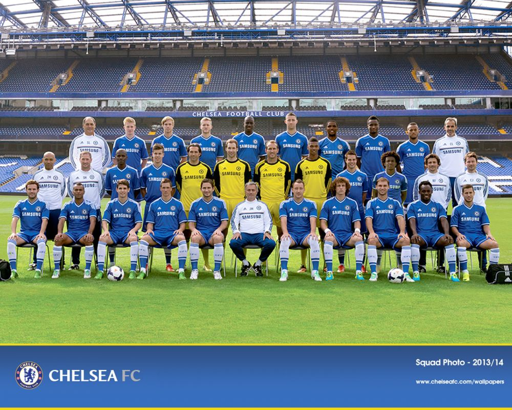

한 단어로 시즌을 요약하면 첼타몽, 바이에른 뮌헨을 만나든 선덜랜드를 만나든 비등한 경기를 펼치는...[40]
리그, 컵, 챔피언스리그 모두 무관으로 끝났다. 이로써 로만 체제 2번째 무관이자 무리뉴의 감독 경력 2번째 무관이 되었다.
팬들의 평가는 엇갈리는 편인데, 애초에 무리뉴가 없는 동안 전력이 약화되어 지난 시즌에는 우승경쟁에서 진작에 밀려났고 챔스는 조별리그 광탈을 했던 팀을 가지고 시즌 막판에 결국 밀려났다지만 토에바라는 희대의 쓰레기같은 퀄리티의 스트라이커진을 가지고 우승경쟁을 했고,[41] 챔스도 4강을 기록했기에 나쁘지 않다는 평가. 우승 경쟁을 하던 맨체스터 시티와 리버풀 FC에게 전승을 거두고그놈의 의적질만 아니었어도 리그와 리그컵 성적은 더 좋았을 테니... 챔스 8강에서 기적적으로 판도를 뒤집는 등의 임팩트 있는 모습이 몇 번 있었기에 이대로 끝난 게 아쉽다는 평가로 나뉜다.물론 첼시까들과 무까들은 무관을 신나게 조롱 중 그래도 다음 시즌을 기대한다는 점은 모두 같은 듯.